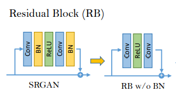
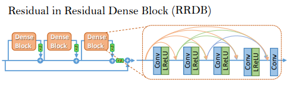
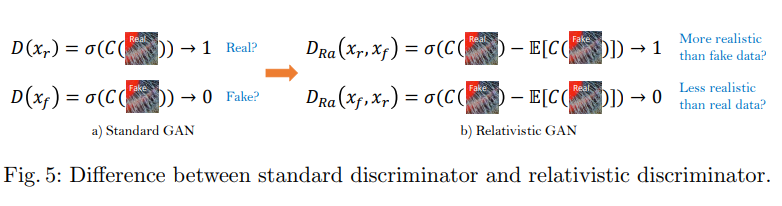
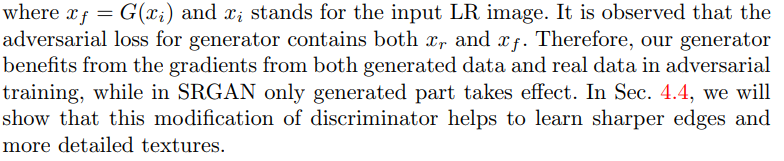

ESRGAN 是增强型的 SRGAN：
SRGAN是图像超分辨率中改进视觉体验中的一个里程碑。其在GAN网络使用残差块和感知损失优化来构建基础模型。通过这些SRGAN显著提高了基于PSNR的方法重建的整体视觉效果。但是SRGAN生成的图像仍然和真实的图像存在明显的差异。
Paper:
Xintao Wang, Ke Yu, Shixiang Wu, Jinjin Gu, Yihao Liu, Chao Dong, Chen Change Loy, Yu Qiao, Xiaoou Tang
ESRGAN: Enhanced Super-Resolution Generative Adversarial Networks
To appear in ECCV 2018 workshop. Won Region 3 in the PIRM2018-SR Challenge. Code and models are at this https URL

文章主要提出了三个创新点：
-
引入密集残差块（RDDB）来提升模型的结构，使之具有更大的容量和更易于训练。并且去除了 BN，使用了残差缩放的方法（residual scaling）,并且节点权重初始化较小，使其可以训练成一个更深的网络。
原RB（Residual Block）：

RRDB（Residual in Residual Dense Block）：

-
借用相对 GAN 的思想，让判别器判断的是相对真实性而不是绝对真实度 （RaGAN）。相对平均 GAN 学习判断“是否一个图像相比于另一个更真实”而不是“是否一个图像是真或假”。

改进后的感知损失函数表达式：
判别器：
生成器：

ESRGAN 同时使用了生成器生成的数据和真实数据来训练，而 SRGAN 仅仅使用了生成的数据。论文后面展示了这种方法改进后，一些边和细节的纹理处理的更好了。
-
利用 VGG 的激活前的特征值改善感知损失，会使得生成的图像有更加清晰的边缘（为亮度的一致性和纹理恢复提供更强的监控）
最终生成器的损失函数为：
作者拿去参加 ECCV2018 的 PIRM-SR 挑战赛的 ESRGAN 网络采用了16个 RRDB 模块。论文中也说了拿去参赛的 ESRGAN 做的一些小改动。
-
MINC 损失函数作为感知损失函数的变种。3.3节论文中有说。
-
Pristine 数据集被加入到训练中去了。(这一点说明我们可以在 ASC19 中也从数据集上都手脚)
-
上面损失函数 L1 的系数设为10
-
使用了一种叫做 back projection 的后处理方式。Timofte, R., Rothe, R., Van Gool, L.: Seven ways to improve example-based single image super resolution. In: CVPR. (2016)这篇论文。可以改进PSNR系数并且有时候可以使得PI降低。
本博客所有文章除特别声明外，均采用 CC BY-SA 4.0 协议 ，转载请注明出处！联系作者。